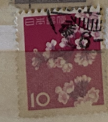
| SOURCE | TITLE| IMAGE MATCH | click to source page |
| HipStamp | Japan 725 Used 1961 Cherry Blossoms | Asia - Japan, General Issue Stamp / HipStamp | 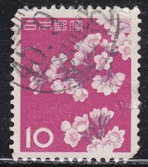 |
| Colnect | Japan : Stamps [Year: 1962] [1/4] : Colnect 📮 | 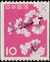 |
| eBay | Japan 1961 - Mihon Overprint - Specimen Overprint (677) Mint never Hinged | eBay | 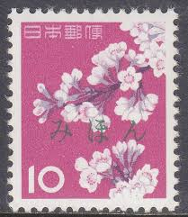 |
| eBay | Japan: Lot 45 - Postage (Details below). 2022 Scott Catalog Value $200.00 | eBay | 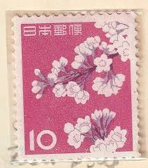 |
| eBay | Flowers Decimal Japanese Stamps for sale | eBay | 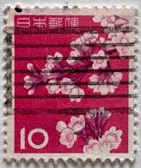 |
| eBay | TIMBRE JAPON JAPAN CERISIER EN FLEUR 1961 FLORE FLORE | eBay | 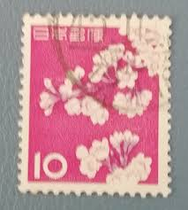 |
| Stampedia | JAPAN 1961 10 yen Definitive Stamps, | Cherry Blossoms | 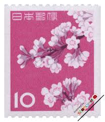 |
| HipStamp | Japan #725 Cherry Blossoms; Used | Asia - Japan, General Issue Stamp / HipStamp | 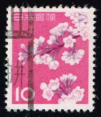 |
| Stamp Community Forum | Need Help With Japan Cherry Blossom Stamp - Stamp Community Forum | 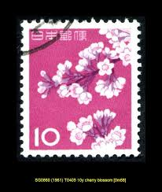 |
| HipStamp | Search "Japan 1961" / HipStamp | 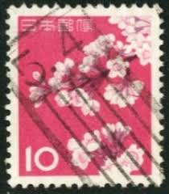 |
| HipStamp | Search "Japan 1961" / HipStamp | 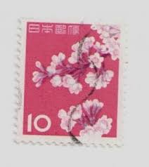 |
| eBay | Japan "Cherry Blossom" 10 Yen 1961 Stamp | eBay Australia | 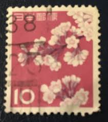 |
| HipStamp | Japan cherry blossom 10 (AP107620) | Asia - Japan, Stamp / HipStamp | 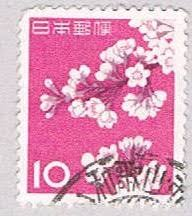 |
| HipStamp | Japan 725 Used 1961 Cherry Blossoms | Asia - Japan, General Issue Stamp / HipStamp | 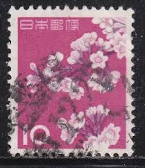 |
| HipStamp | Japan #725, Used Pair - 1961 - Japan020Dts13 | Asia - Japan, General Issue Stamp / HipStamp | 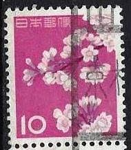 |
| Saatchi Art | Stamp Collection Art- Japanese Nippon Cherry Blossom Photography by Deborah Pendell | Saatchi Art Belgium | 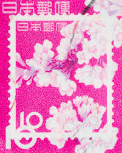 |
| HipStamp | Japan #725 10y Cherry Blossoms | Asia - Japan, General Issue Stamp / HipStamp | 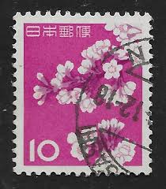 |
| HipStamp | Japan #725 MH | Asia - Japan, General Issue Stamp / HipStamp | 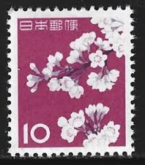 |
| PicClick | JAPAN 1961 REGISTERED to US -Japan Customs Label $29.24 - PicClick | 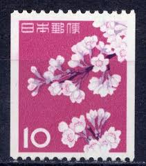 |
| Stamp Collecting Blog | Definitive postage stamps of Japan: “Animal, plant and national treasure” series | 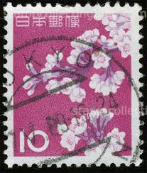 |
| New York Botanical Garden | Pink Never Dyes: International Postage Stamps Colored Pink | New York Botanical Garden | 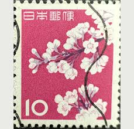 |
| Cherrystone Auctions | U.S. & Worldwide Stamps & Postal History - September 7-8, 2006 - JAPAN | 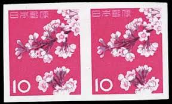 |
| ebid.net | JAPAN, FLOWERS, Cherry blossom, pink 1962, 10 Yen, #2 on eBid Canada | 190194945 | 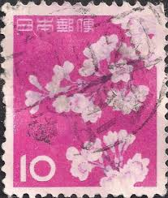 |
| maciasexposiciones.com | Final Sale Stamp Japan Stamps Archves - Page 2 Of 4 - Rare / Old Stamps | Old Stamps Postage Stamps | 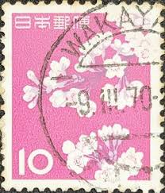 |
| Dreamstime.com | Send Cherry Pic Stock Photos - Free & Royalty-Free Stock Photos from Dreamstime | 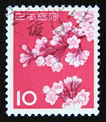 |
| Japan, CHERRY BLOSSOMS. Scott 725 A446. 10, Perf 13. Issued 1981 Apr 01, Unwmk. Photogravure. | 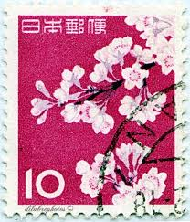 | |
| eCRATER | Japan Postage Stamp 1961 Scott# JP 725 Used 10 ¥ Cherry Blossoms | 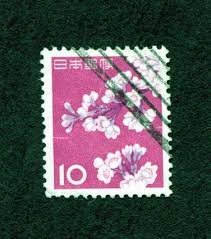 |
| Stamp Auction Network | Shreves Philatelic Galleries, Inc. Sale - 72 Page 67 | 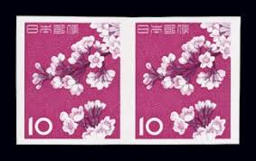 |
| Shutterstock | Republic China Taiwan Circa 1975 Stamp Stock Photo 79617127 | Shutterstock | 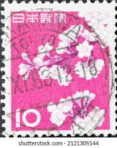 |
| Shutterstock | 5+ Thousand Japanese Postage Stamp Royalty-Free Images, Stock Photos & Pictures | Shutterstock | 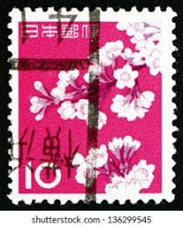 |
| 1961 Japan Flower Series Stamps Complete Version | 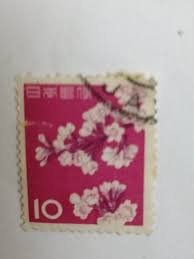 | |
| Shutterstock | Japan Circa 1988 Stamp Printed Japan Stock Photo 50900311 | Shutterstock | 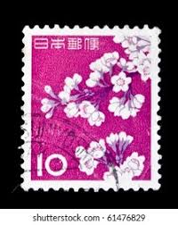 |
| eBay | Las mejores ofertas en Estampillas postales de árboles japonés | eBay | 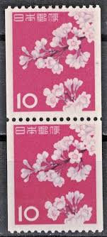 |
| Carousell | Nippon For Sale | Stamps & Prints | Carousell Singapore | 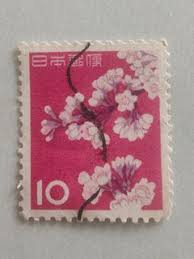 |
| allnumis.com | Stamps Catalog - List of stamps for Flowers, Japan | 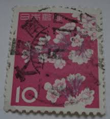 |
| Todocolección | japon 2005. yvert 3726-3735. mobile suit gundam - Buy Antique stamps of Japan on todocoleccion | 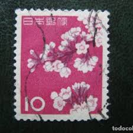 |
| Alamy | 10 yen hi-res stock photography and images - Alamy | 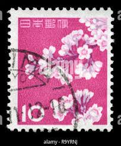 |
| HipStamp | Japan 1961 - U - Scott #725 | Asia - Japan, General Issue Stamp / HipStamp | 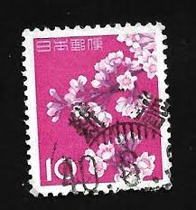 |
| Discover 160 Cherry Blossoms and blossom ideas on this Pinterest board | beautiful flowers, flowers photography, cherry blossom and more | 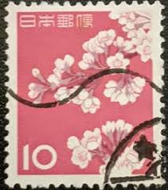 | |
| Dreamstime.com | 215 Yen Stamp Stock Photos - Free & Royalty-Free Stock Photos from Dreamstime | 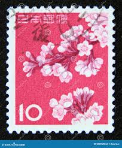 |
| Todocolección | japon 1470 sin charnela, sello para cartas de c - Buy Antique stamps of Japan on todocoleccion | 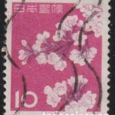 |
| iStock | Cherry Blossoms And Japanese Flag Stamp Stock Photo - Download Image Now - Japan, Postage Stamp, Japanese Culture - iStock | 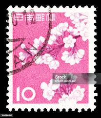 |
| Shutterstock | Japan Circa 1962 Stamp Printed Japan Stock Photo 90296668 | Shutterstock | 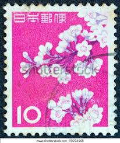 |
| j// (rottenxox) - Profile | Pinterest | 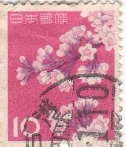 | |
| SoundCloud | Stream funk music | Listen to songs, albums, playlists for free on SoundCloud | 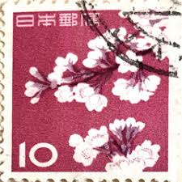 |
| eBay | Flowers Individual Japanese Stamps for sale | eBay | 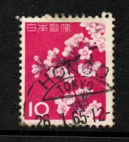 |
| Amazon.sg | 動植物国宝切手カタログ : 山崎 好是: Amazon.sg: Books | 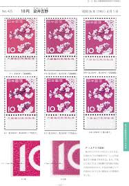 |
| eBay UK | Japanese Thematic Postal Stamps for sale | eBay UK | 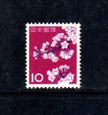 |
| Shutterstock | 2+ Hundred Cherry Blossom Postage Stamp Royalty-Free Images, Stock Photos & Pictures | Shutterstock | 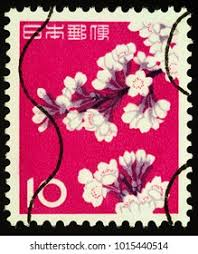 |
| Dreamstime.com | 663 Japan Stamp Art Stock Photos - Free & Royalty-Free Stock Photos from Dreamstime | |
| Shutterstock | Japan Circa 1961 Postage Stamp Printed Stock Photo 139534601 | Shutterstock | |
| RUBY - Merry Christmas 2022 🎄🎄🎄🤶🎅🤶🎅 we hope you all enjoyed your Day and had a little visit from Santa Claus and his Reindeer. Good job Santa you did a great job | ||
| Cherry Blossom Tree Falling | ||
| Alamy | Postage stamps of china old hi-res stock photography and images - Page 2 - Alamy | |
| Shutterstock | Pasuruan Indonesia August 29 2025 Stamp Stock Photo 2677260493 | Shutterstock | |
| Bob Shop | Japan - Japan- Used- Cancel- Postmark- Post Mark- Thematic- Flora for sale in Pretoria / Tshwane (ID:671682327) | |
| PicClick UK | JAPAN STAMP 1875-1882 Cherry Blossom & Koban With Cancels And Bota £70.00 - PicClick UK | |
| Alamy | Post stamp japan hi-res stock photography and images - Page 8 - Alamy | |
| Shutterstock | Japanese Envelope: Over 7,964 Royalty-Free Licensable Stock Photos | Shutterstock |